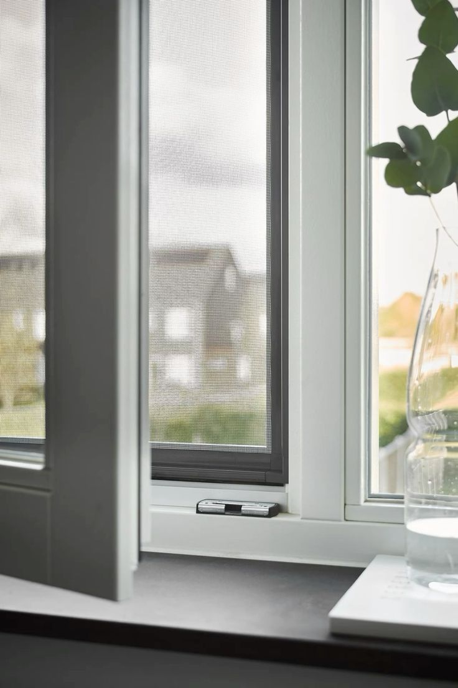
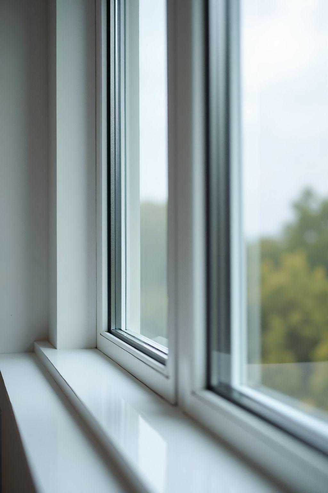
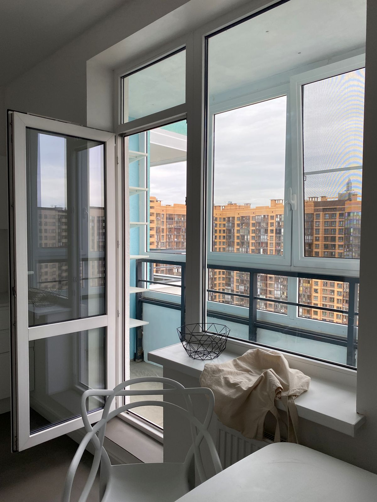
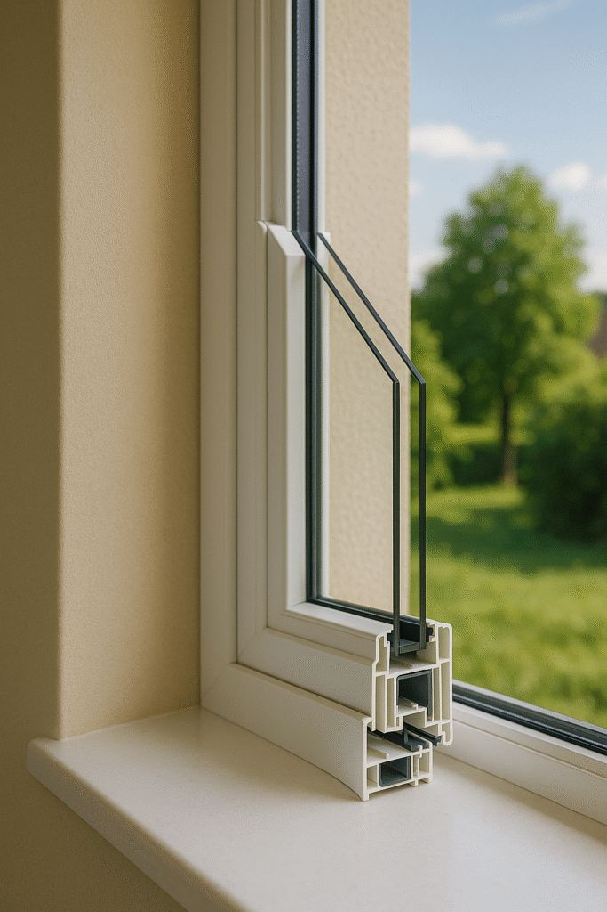

Изготавливаем сами. Профиль Экспроф, фурнитура GU. Своя проверенная команда монтажников. Не посредники из Челябинска — приезжаем и регулируем на месте.

Полный цикл: от демонтажа старого окна до уборки после монтажа
Изготовление и установка пластиковых окон любого размера. Профиль Экспроф, фурнитура GU — надёжно и тепло.
Остекление, утепление, отделка. Делаем «под ключ»: демонтаж, монтаж, вывоз мусора.
Аккуратно снимем старое, поставим новое, отрегулируем и уберём за собой. Работаем чисто.
Привезём конструкции в удобное время. Можно заказать только изделия — без монтажа.
После демонтажа не оставляем хлама — всё вывозим и утилизируем сами.
Если что-то пошло не так — мы рядом. Приедем и отрегулируем, а не отправим «к производству».
В городе много конкурентов, но большинство — посредники
Мы изготавливаем окна здесь, в Новоуральске. Если что-то нужно поправить — приезжаем и решаем на месте, без «вопросов к производству где-то там».
Работаем только на качественных материалах. Окна тёплые, фурнитура плавная и долговечная.
Свои люди, а не случайные подрядчики. Ставим аккуратно, регулируем, убираем за собой.
Демонтаж, доставка, монтаж, вывоз мусора. Можно заказать и просто изделия — как удобно вам.
Окна, балконы и лоджии, которые мы сделали



«Заказывали только оконную конструкцию с сетками — привезли быстро, всё аккуратно. Качеством довольны».
— Ирина, Новоуральск«Делали балкон под ключ: снесли старое, утеплили, поставили новое остекление. Мусор вывезли сами, очень чисто».
— Алексей, Тараски«Понравилось, что производство своё. Когда нужно было отрегулировать створку — приехали в тот же день».
— Марина, НовоуральскТелефон: 8 912 24 33 405
Адрес: г. Новоуральск, Свердловская область, ул. Торговая, 2, строение 1
Часы работы: пн–пт, 8:00–17:00
Открыть на Яндекс.Картах